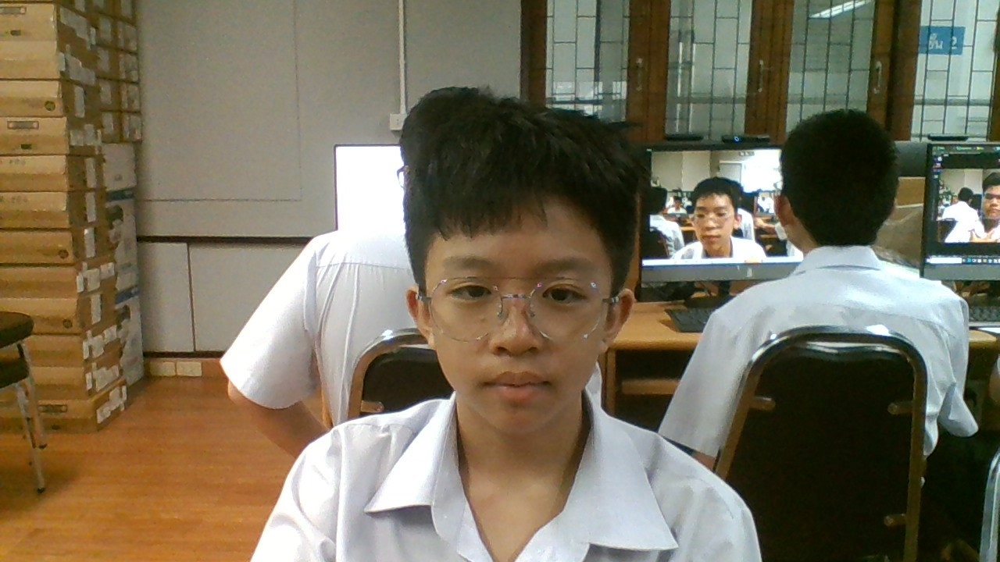

ความหมายของวันสิ้นปี
วันปีใหม่ส่งท้ายปีเก่า เป็นวันเริ่มนับ 1 ใหม่ในปีพุทธศักราช และคริสตศักราช ตรงกัยวันที่ 1 มกราคม ของทุกๆ ปีโดยยึดวันขึ้นปีใหม่ตาม ปฏิทินเกรโกเรียน ซึ่งเป็นปฏิทินที่ใช้แพร่หลายในประเทศตะวันตก มีระยะเวลา 1 ปียาวนาน 365.25 วัน
ความหมายของวันสิ้นปี
วันปีใหม่ส่งท้ายปีเก่า เป็นวันเริ่มนับ 1 ใหม่ในปีพุทธศักราช และคริสตศักราช ตรงกัยวันที่ 1 มกราคม ของทุกๆ ปีโดยยึดวันขึ้นปีใหม่ตาม ปฏิทินเกรโกเรียน ซึ่งเป็นปฏิทินที่ใช้แพร่หลายในประเทศตะวันตก มีระยะเวลา 1 ปียาวนาน 365.25 วัน
ความสำคัญของปีใหม่ เวลาการนับ 1 ปีคือเวลาที่ขั้วโลก โคจรรอบดวงอาทิตย์ครบ 1 รอบ (365 วัน) นับได้เป็น 12 เดือนตามปฏิทินสุริยคติ จึงทำให้ปีใหม่คือช่วงเวลาของการขึ้นรอบใหม่หลังจากครบ 365 วันหรือ 12 เดือนนั่นเอง

 ความเป็นมา
วันปีใหม่ มีประวัติความเป็นมาซึ่งเปลี่ยนแปลงไปตามยุคสมัยและความเหมาะสม ตั้งแต่ในสมัยเริ่มแรกเมื่อชาวบาบิโลเนียเริ่มคิดค้นการใช้ปฏิทิน โดยอาศัยระยะต่าง ๆ ของดวงจันทร์เป็นหลักในการนับ เมื่อครบ 12 เดือนก็กำหนดว่าเป็น 1 ปี และเพื่อให้เกิดความพอดีระหว่างการนับปีตามปฏิทินกับปีตามฤดูกาล จึงได้เพิ่มเดือนเข้าไปอีก 1 เดือน เป็น 13 เดือนในทุก 4 ปี
ความเป็นมา
วันปีใหม่ มีประวัติความเป็นมาซึ่งเปลี่ยนแปลงไปตามยุคสมัยและความเหมาะสม ตั้งแต่ในสมัยเริ่มแรกเมื่อชาวบาบิโลเนียเริ่มคิดค้นการใช้ปฏิทิน โดยอาศัยระยะต่าง ๆ ของดวงจันทร์เป็นหลักในการนับ เมื่อครบ 12 เดือนก็กำหนดว่าเป็น 1 ปี และเพื่อให้เกิดความพอดีระหว่างการนับปีตามปฏิทินกับปีตามฤดูกาล จึงได้เพิ่มเดือนเข้าไปอีก 1 เดือน เป็น 13 เดือนในทุก 4 ปี
กิจกรรมที่จัดในวันขึ้นปีใหม่ 1.ทำความสะอาดบ้านเรือน ตกแต่งให้สวยงาม 2.มอบของขวัญปีใหม่ มอบดอกไม้ กราอบขอพรจากผู้ใหญ่ รวมไปถึงการส่งบัตร ส.ค.ส. 3.ทำบุญตักบาตร ถวายสังฆทาน เข้าวัดฟังธรรม บำเพ็ญกุศล 4.การจัดงานเลี้ยง งานรื่นเริง ในหน่วยงานต่างๆ 5.กลับต่างจังหวัด พบหน้าครอบครัว อยู่กับผู้มีพระคุณ 6.สวดมนต์ข้ามปี เป็นอีกกิจกรรมที่พุทธศาสนิกชนนิยมปฏิบัติ

 กลอนปีใหม่นี้
ปีใหม่เวียนมาถึงอีกครั้งหนึ่ง
ขอให้ซึ่งความสุขทุกถิ่นที่
สุขภาพแข็งแรงแจ่มใสดี
สิ่งไม่ดีผ่านพ้นไปกับกาล
ขอให้คิดสิ่งใดได้สมหวัง
มีพลังมุ่งมั่นสร้างสรรค์งาน
พบแต่สุขความรักและเบิกบาน
ตลอดปีตลอดกาลปีใหม่เอย
กลอนปีใหม่นี้
ปีใหม่เวียนมาถึงอีกครั้งหนึ่ง
ขอให้ซึ่งความสุขทุกถิ่นที่
สุขภาพแข็งแรงแจ่มใสดี
สิ่งไม่ดีผ่านพ้นไปกับกาล
ขอให้คิดสิ่งใดได้สมหวัง
มีพลังมุ่งมั่นสร้างสรรค์งาน
พบแต่สุขความรักและเบิกบาน
ตลอดปีตลอดกาลปีใหม่เอย
 ด.ช.สมบูรณ์ ชัยบุญญโรจน์ ม.203 เลขที่ 9